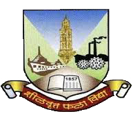

|  | University of Mumbai |
| Home | Grading System | Apply Online | About University |
|---|
The University of Mumbai (known earlier as University of Bombay) is one of the oldest and premier Universities in India. It was established in 1857 consequent upon "Wood's Education Dispatch", and it is one amongst the first three Universities in India. As a sequel to the change in the name of the city from Bombay to Mumbai, the name of the University has been changed from "University of Bombay" to "University of Mumbai", vide notification issued by the Government of Maharashtra and published in the Government Gazette dated 4th September, 1996. The profile of this University carved out in 155 years of its functioning attests to its manifold achievements as the intellectual and moral powerhouse of the society. The University has always given its best to the country in general and to the city of Mumbai in particular by enthusiastically shouldering an ever-growing load of social values and opportunities. Initially, the University concentrated its efforts on controlling teaching at the undergraduate level and in conducting examinations. Later on it took up research and the task of imparting instructions at the Post-Graduate level. This resulted in the establishment of the University Departments beginning with the School of Sociology and Civics & Politics. The independence of the country led to the re-organization of the functions and powers of the University with the passing of the Bombay University Act of 1953. It has two campuses of areas 243 acres and 14 acres at Vidyanagari and Fort respectively; sub-campuses/centers at Ratnagiri 20 acres, Thane 6.50 acres and Kalyan 6.26 acres with 56 University Departments & Institutes and 691 affiliated colleges. It has established its name in industrial & International collaborations and runs various professional courses. The University was accorded 5 star status in 2001 & 'A' grade status in April 2012 by the National Assessment and Accreditation Council (NAAC). It has been granted University with Potential for Excellence (UPE) status by UGC and PURSE Scheme by DST. Many of its Departments are recognized under various national programmes, such as UGC-SAP at various levels, DST-FIST, etc. At national level, it has excelled in sports, cultural and out-reaches activities. In the last five years it has seen 104% increase in under-graduate students, 112% increase in post-graduate students and 147% increase in distance - education students. There is 156% increase in the number of research papers published in International journals.